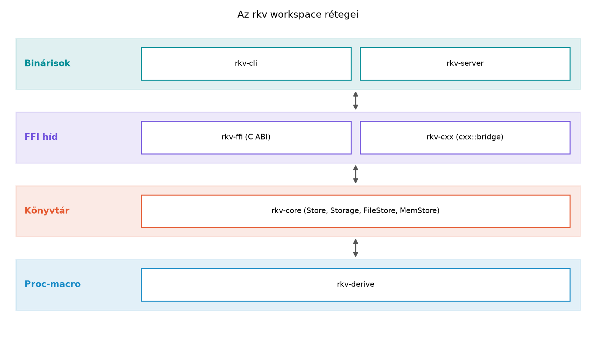

Egy C++-projekt zárásakor az átadás általában így néz ki: a CMake-listák, a tesztek, a CI-konfiguráció és a dokumentáció külön-külön rendben van, de a teljes rendszer integrációja az utolsó héten derül ki. Az rkv esetén ugyanezt a pillanatot éljük át Rustban, azzal a különbséggel, hogy a cargo workspace és a beépített tesztinfrastruktúra az integráció nagy részét már lefedi. A cél most nem új nyelvi elem megtanítása, hanem a korábbi alfejezetek eredményeinek egyetlen, átadható rendszerré gyúrása.
A korábbi laborokban elkészült a Store típus, a
Storage trait, a MemStore és
FileStore implementáció, a CLI, a tokio-szerver, a C ABI-s
FFI, a proc-macro crate és a cxx-hídon keresztül elérhető C++-kliens. A
záróprojekt ezeket a darabokat teszteli, méri és dokumentálja. C++-ban a
Catch2/GoogleTest + CMake + CTest + clang-tidy kombináció a szokásos;
Rustban ezt a cargo test, clippy,
fmt és adott esetben a Miri váltja ki, szorosabban a
nyelvbe integrálva.
Az rkv átvételi követelményei konkrét, mérhető feltételek. A listát a Tesztelés és dokumentáció, a C++-együttműködés és a Naplózás és megfigyelhetőség alfejezetek eredményeiből állítjuk össze:
Storage traites
MemStore és FileStore átmegy a generikus
szerződésteszten; a FileStore adatai a folyamat
újraindítása után is megmaradnak.GET,
SET, DEL, LIST [<prefix>]
parancsai működnek a szerveren és a CLI-n keresztül.Store<FileStore> szálbiztos, a terheléses teszt nem
okoz holtpontot vagy adatvesztést.cargo fmt --check,
cargo clippy -- -D warnings, cargo test,
cargo doc --no-deps, valamint az unsafe részekre a Miri
futtatása sikeres.A rendszer rétegei:

A rétegábra azt mutatja, hogy a rkv-core a rendszer
magja: minden más crate ezt használja, egyetlen kivétellel a
rkv-derive, amely önálló szerszám. A C++-kliens a
rkv-cxx crate-ből generált bridge-en keresztül beszél a
Rust tárolóval – ez az a határ, ahol a C++-os kényelem és a
Rust-biztonság találkozik.
Két területet kell véglegesítenünk: a perzisztencia snapshot + napló
mechanizmusát, és a LIST tartomány-lekérdezést.
A Structok és metódusok alfejezetben
rögzítettük, hogy a kulcsok String, az értékek pedig
String típusúak. A FileStore eddig vélhetően
csak a memóriában tartotta a kulcs-érték párokat, vagy egyszerű naplót
írt. A teljes perzisztenciához egy iparági bevált mintát valósítunk meg:
hozzáfűzéses napló (append-only log) a műveletekről, és periodikus vagy
programozott snapshot, amely a teljes állapotot atomikus fájlcserével
menti.
Definíció. A snapshot egy olyan fájl, amely a tároló
teljes kulcs-érték állapotát tartalmazza egy adott időpillanatban. A
hozzáfűzéses napló a snapshot után végrehajtott SET és
DEL műveletek sorozatát tárolja, bejegyzésenként az
időbélyeggel.
A Rustban az atomikus fájlcsere a std::fs::rename
garantált atomikusságán alapul Linuxon és POSIX-rendszereken. A
mintázat:
sync_all-al lemezre kényszerítjük.fs::rename-nel felülírjuk a régi snapshotot.Ez a sorrend garantálja, hogy a folyamat bármely pontján bekövetkező összeomlás esetén a régi snapshot és a napló konzisztens állapotot ad vissza.
Szabály. A naplóbejegyzés és a snapshot frissítése
közötti időben a rendszernek legalább egyszer a sync_all
hívással kell a puffereket a lemezre írnia; ellenkező esetben a
rename atomikussága nem véd a rendszer összeomlásától.
A FileStore bővített commit metódusa:
impl FileStore {
/// A naplóba ír egy bejegyzést, és időnként snapshotot készít.
pub fn commit(&mut self, cmd: &Command) -> Result<(), Error> {
// A parancsot appendeljük a naplóba.
let entry = LogEntry {
timestamp: SystemTime::now()
.duration_since(UNIX_EPOCH)
.unwrap_or_default()
.as_secs(),
command: cmd.clone(),
};
self.log.append(&entry)?;
self.log.flush()?;
// Ha a napló mérete átlépi a küszöböt, snapshot.
if self.log.len() > SNAPSHOT_THRESHOLD {
self.write_snapshot_atomic()?;
self.log.truncate()?;
}
Ok(())
}
/// Atomikusan írja a memóriában lévő állapotot a snapshot fájlba.
fn write_snapshot_atomic(&mut self) -> Result<(), Error> {
let tmp = self.snapshot_path.with_extension("tmp");
let mut file = OpenOptions::new()
.write(true)
.create(true)
.truncate(true)
.open(&tmp)?;
for (key, value) in self.pairs.iter() {
writeln!(file, "{}\t{}", key, value)?;
}
file.sync_all()?;
std::fs::rename(&tmp, &self.snapshot_path)?;
// A rename után a régi snapshot felülíródott; a tmp már nem létezik.
Ok(())
}
}A LogEntry típus biztosítja a napló strukturált
olvasását. A Command enum Clone-ja szükséges,
mert a parancsot a naplóba is és a memóriabeli állapotra is
alkalmazzuk.
A fenti kódban a self.log egy egyszerű, a fájlhoz
hozzáfűző wrapper; a flush a File::sync_data-t
hívja. A SystemTime-ból való unwrap_or_default
kerüli a pánikot, ha a rendszeróra a UNIX-epoch előtt van — ez a fajta
védekezés idiomatikus Rustban.
A kidolgozott példa egy gyakori hiba: a snapshot írása előtt a napló törlése. Vegyük a következő, szándékosan hibás sorrendet:
// Ez a változat szándékosan nem fordul le logikailag hibás:
fn bad_recover(&mut self) -> Result<(), Error> {
self.log.truncate()?; // a napló elveszik, ha a snapshot írása közben hiba lép fel
self.write_snapshot()?;
Ok(())
}Ha a write_snapshot pánikol vagy a ? korán
visszatér, a napló már üres, a snapshot pedig nem frissült: adatvesztés.
A javítás a sorrend megfordítása: először snapshot, utána
napló-csonkolás. A Rust ? operátorral a hiba explicit, de a
logikai sorrendet a fordító nem ellenőrzi — ez a programtervező
felelőssége, ugyanúgy, mint C++-ban a kivételbiztossági garanciáké.
A LIST [<prefix>] parancs eddig talán csak a
teljes kulcslistát adta vissza. A tartomány-lekérdezés a prefixszel
rendelkező kulcsokat adja vissza, a C++
std::map::lower_bound-jához hasonlóan.
Definíció. A prefix-lekérdezés a kulcsok rendezett halmazában a megadott string-prefixszel kezdődő kulcsok halmaza.
A BTreeMap<String, String> a std::map
Rust-megfelelője: rendezett, önkiegyensúlyozó fa. A range
metódus a
(Included(prefix), Included(prefix_with_max_suffix))
intervallumot járja be. A trükk: ha a prefixhez hozzáadunk egy, a
lexikografikus rendezésben a maximális elemet jelölő szuffixet, az
intervallum felső határa lefedi az összes prefixszel kezdődő
kulcsot.
/// Visszaadja a megadott előtaggal kezdődő kulcsérték-párokat.
pub fn list_prefix(&self, prefix: &str) -> Vec<(String, String)> {
let start = prefix.to_string();
// A felső határ: a prefixhez hozzáfűzünk egy Unicode-karaktert, amely
// nagyobb minden lehetséges kulcsnál. A char::MAX alkalmas erre.
let end = format!("{}\u{10FFFF}", prefix);
self.pairs
.range(start..=end)
.map(|(k, v)| (k.clone(), v.clone()))
.collect()
}A start..=end intervallum az inkluzív tartomány; a
start string a prefix, az end pedig a prefix +
char::MAX. Ez a konstrukció a C++
std::lower_bound-jánál magasabb szintű, közvetlenül
kifejezi a szándékot. A BTreeMap rendezett volta miatt a
leképezés O(log n + k) időkomplexitású, ahol
$k$ a találatok száma.
A szerver protokollja a LIST parancsra így válaszol:
LIST app
VALUE app::1
VALUE app::2
OK 2Ha a prefix üres, akkor az összes kulcsot listázza. A
Command::List(Option<String>) enum variáns már a Structok és metódusok óta képes az opcionális
argumentum kezelésére.
Munkakönyvtár: ~/rust-labor/rkv/
A labor a korábbi alfejezetek eredményeire támaszkodik. Ha bármelyik
crate hiányzik, a cargo new parancsokkal pótolható, de a
cél most az ellenőrzés és a véglegesítés.
A Cargo.toml fő workspace-bejegyzésnek a következő
tagokat kell tartalmaznia:
[workspace]
members = [
"rkv-core",
"rkv-cli",
"rkv-server",
"rkv-ffi",
"rkv-cxx",
"rkv-derive",
]
resolver = "2"
edition = "2024"Az rkv-derive proc-macro crate és az
rkv-cxx a cxx bridge miatt speciális. A
rkv-ffi a cbindgen-hez, a rkv-cxx
a cxx-buildhöz kapcsolódik, a rkv-cli a
clap-et, a rkv-server a tokiot és
a tracinget használja.
A rkv-core/src/store.rs-ben a FileStore
kapja meg a fenti commit és
write_snapshot_atomic metódusokat. A FileStore
Drop implementációja nem szabad, hogy a
commit-ot hívja, mert a Drop nem tud
Result-ot visszaadni; helyette a Drop a
naplófájlt lezárja, a tényleges mentést a commit explicit
hívás végzi.
A rkv-core/src/store.rs-ben a FileStore és
MemStore közös list_prefix metódusát a
Storage trait-ben definiáljuk, vagy a trait-en kívül
default metódusként. A Storage trait eddigi
list() metódusát kibővítjük:
pub trait Storage {
fn get(&self, key: &str) -> Result<Option<String>, Error>;
fn set(&mut self, key: &str, value: &str) -> Result<(), Error>;
fn delete(&mut self, key: &str) -> Result<bool, Error>;
fn list(&self, prefix: Option<&str>) -> Result<Vec<(String, String)>, Error>;
}A list implementációja a prefix paramétert
használja.
A workspace gyökeréből:
cargo fmt --all -- --check
cargo clippy --all-targets --all-features -- -D warnings
cargo test --workspace
cargo doc --no-deps --workspaceA cargo test futtatja az integrációs teszteket: a
tests/common/mod.rs generikus szerződéstesztet, a
FileStore perzisztenciatesztet, a szerver protokolltesztet
és a szálbiztossági tesztet.
A szerver integrációs tesztjének vázlata:
#[tokio::test]
async fn server_list_prefix_returns_filtered_pairs() {
let store = Arc::new(std::sync::RwLock::new(
FileStore::open(temp_dir.path()).unwrap()
));
store.write().unwrap().set("app::1", "x").unwrap();
store.write().unwrap().set("app::2", "y").unwrap();
store.write().unwrap().set("other", "z").unwrap();
let listener = TcpListener::bind("127.0.0.1:0").await.unwrap();
let addr = listener.local_addr().unwrap();
let server = tokio::spawn(run_server(listener, store.clone()));
let mut stream = TcpStream::connect(addr).await.unwrap();
stream.write_all(b"LIST app\n").await.unwrap();
let mut buf = String::new();
stream.read_to_string(&mut buf).await.unwrap();
assert!(buf.contains("app::1"));
assert!(buf.contains("app::2"));
assert!(!buf.contains("other"));
server.abort();
}A C++-kliens átvételi tesztje a cpp-client/ mappában
CMake-kel futtatható. A korábban létrehozott Count parancs
és a LIST prefix használata demonstrálja a cxx-híd
működését:
#include "rkv_cxx.h"
#include <iostream>
#include <cassert>
int main() {
rust::Box<rkv::Store> store = rkv::make_mem_store();
store->set("a", "1");
store->set("b", "2");
store->set("c", "3");
auto list = store->list("b");
assert(list.size() == 1);
assert(list[0].key == "b");
std::cout << "C++ client acceptance test passed\n";
return 0;
}A rkv_cxx.h a cxx-build által generált header; a pontos
elérési út a crate verziójától függ, ezért a CMake-ben a
${CMAKE_BINARY_DIR} alatt kell keresni.
Az rkv-ffi és a rkv-cxx crate unsafe kódot
tartalmaz. A Miri futtatása a C ABI-nál:
cargo +nightly miri test --package rkv-ffiA Miri a nightly toolchaent igényli; az ellenőrzési igényt a Források és ellenőrzési hiányok részben tüntetjük
fel. Az unsafe blokkokban a // SAFETY:
kommenteknek jelen kell lenniük, és a Miri által talált hibákat a hívó
oldalon kell javítani.
A minőségkapuk a fenti parancsok. A tipikus hibák és átállási csapdák ebben a fázisban:
Drop-ban akarunk I/O-t végezni.
C++-ban a destruktorok gyakran írnak fájlt vagy zárnak kapcsolatot;
Rustban a Drop nem adhat vissza Result-ot, és
a pánikolás a Drop-ban abortához vezethet. A mentést
explicitté kell tenni, a Drop csak erőforrás-lezárásra
való.cargo test nem fedez fel. C++-ban a sanitizereknek felel
meg; Rustban ez az egyik legerősebb eszköz az unsafe kód
ellenőrzésére.-D warnings túl szigorúnak
tűnik. A clippy lintjei gyakran konkrét Rust-idiómát
javasolnak; a -D warnings arra kényszerít, hogy az
API-tervezés és a kódbeli minták a API-tervezés
Rustban alfejezetben tanult elveket kövessék.A prefix-lekérdezésnél gyakori elcsúszás: a range
intervallumot nyílt végűre vesszük, vagy a felső határt rosszul
számoljuk. Tegyük fel, hogy a kulcsok "a",
"ab" és "abc". A prefix "a". A
helyes felső határ a "a" + Char::MAX, de ha a
kód start..end helyett start..=end-et ír, a
"a" kulcs kétszer szerepel, mert a "a" maga is
benne van a tartományban. Ez nem hiba, de ha a kód a prefixhez egy
"z"-t fűz, a "abc" kimaradhat.
A Rust BTreeMap::range inkluzív tartománya a
..= operátorral fejezhető ki. A C++
std::map::equal_range a lower_bound-on és
upper_bound-on alapul; a Rust változat ugyanezt a logikát
magasabb szinten adja, de a határérték-számítás a programozóra van
bízva.
Az átvett rendszer további irányai:
async modell és a tokio
csatornák erre jól illenek.tokio-rustls crate-tel a
TCP-szerver TLS-t kapna; a tananyag a Párhuzamosság és aszinkronitás részben
tanult módon bővíthető.no_std-s
rkv-core változat a Beágyazott Rust
kitekintés alfejezetben bemutatott embedded-hal és
Embassy eszközökkel élne.write_snapshot_atomic metóduson, hogy a hívó egy
&self-et adjon át. Mi történik, ha a
self.pairs.iter() sort
let pairs = self.pairs.clone(); for (k, v) in pairs.iter()-re
cseréljük?std::map<std::string, std::string> elemei
közül a megadott prefixszel kezdődő kulcsokat gyűjti ki. Valósítsd meg
idiomatikus Rustban a BTreeMap range
metódusával.FileStore-t egy compact módszerrel, amely a
naplót és a snapshotot egyesíti, ha a napló mérete meghaladja a
küszöbérték dupláját. A compact hívható legyen a
commit-ból automatikusan. Készíts hozzá unit tesztet.rkv-server egyik kapcsolatkezelőjében a
stream.read_line után a
store.read().unwrap().list(Some(&line)) hívás
pánikolhat, ha a RwLock mérgezett. Refaktorálj úgy, hogy a
hiba ERR poisoned lock üzenetként menjen a kliensnek, ne
pedig a szerver szálljon el. Használd a Result és
? kombinációt.A &self-re váltás után a
self.pairs.iter() nem fordul, mert a pairs
mező &self esetén nem mozgatható; de a
clone() átmeneti másolatot készít, így a kód lefordul. A
futás során a memóriahasználat megnő, és a clone költséges.
A jobb megoldás, ha a snapshot írása a &self metódusban
a BTreeMap iterátorát használja közvetlenül:
for (key, value) in self.pairs.iter().
A C++:
std::vector<std::pair<std::string, std::string>>
list_prefix(const std::map<std::string, std::string>& map, const std::string& prefix) {
std::vector<std::pair<std::string, std::string>> result;
auto it = map.lower_bound(prefix);
while (it != map.end() && it->first.rfind(prefix, 0) == 0) {
result.emplace_back(*it);
++it;
}
return result;
}A Rust-megfelelő:
fn list_prefix(map: &BTreeMap<String, String>, prefix: &str) -> Vec<(String, String)> {
let start = prefix.to_string();
let end = format!("{}\u{10FFFF}", prefix);
map.range(start..=end)
.map(|(k, v)| (k.clone(), v.clone()))
.collect()
}compact
implementációimpl FileStore {
/// A napló és a snapshot egyesítése, ha a napló túl nagy.
pub fn compact(&mut self) -> Result<(), Error> {
if self.log.len() <= SNAPSHOT_THRESHOLD {
return Ok(());
}
self.write_snapshot_atomic()?;
self.log.truncate()?;
Ok(())
}
}
#[cfg(test)]
mod tests {
use super::*;
#[test]
fn compact_merges_log_into_snapshot() {
let dir = tempfile::tempdir().unwrap();
let path = dir.path().join("store");
let mut store = FileStore::open(&path).unwrap();
for i in 0..100 {
store.set(&format!("key{}", i), "value").unwrap();
}
store.compact().unwrap();
let reloaded = FileStore::open(&path).unwrap();
assert_eq!(reloaded.get("key99").unwrap(), Some("value".to_string()));
}
}A rw.read() hívás LockResult-ot ad; a
? operátorral a mérgezést hibává alakíthatjuk:
async fn handle_client(stream: TcpStream, store: Arc<RwLock<FileStore>>) -> Result<(), Box<dyn Error + Send + Sync>> {
let mut lines = BufReader::new(stream).lines();
while let Some(line) = lines.next_line().await? {
let cmd = parse_command(&line)?;
let result = store.write().map_err(|_| Error::Poisoned)?.apply(cmd);
// ... válaszírás
}
Ok(())
}A map_err(Error::Poisoned) kiküszöböli a pánikot, és a
? a hibát a felsőbb szintre propagálja.
A záróprojekt az rkv workspace-t teljes rendszerként adja át. A
rkv-core Storage traites MemStore
és FileStore típusai a snapshot + hozzáfűzéses napló
mechanizmussal perzisztálnak, az atomikus fs::rename-nel. A
LIST prefix-lekérdezés a BTreeMap::range
tartományával a char::MAX szuffixes felső határt használja.
Az átvételi tesztek a tests/common/mod.rs generikus
szerződéstesztre, a szerver tokio-integrációs tesztjére és a C++-kliens
cpp-client/main.cpp tesztjére épülnek. A minőségkapuk:
cargo fmt --check,
cargo clippy -- -D warnings,
cargo test --workspace, cargo doc --no-deps,
valamint az unsafe részekre a Miri nightly alatt. A kiterjesztési
lehetőségek a replikáció, TLS és beágyazott kliens. Továbbvitt
eredmény: az Összefoglalás: C++→Rust
fordítási kézikönyv és továbbtanulás összefoglaló ezt az átvételi
állapotot és a minőségkapuk eredményét használja kiindulópontként a
C++→Rust fordítási kézikönyvhöz.
cargo miri parancs pontos szintaxisa és a Miri által
ellenőrzött garanciák a current nightly dokumentációban ellenőrizendők;
a stabil toolchainen nem érhető el.cxx-build által generált header pontos elérési útja a
crate verziójától függ; az itt használt rkv_cxx.h név
feltételes.tempfile crate pontos verziója és a
tempdir() API a docs.rs-en ellenőrizendő; a kódrészlet a
3-as főverziót feltételezi.SNAPSHOT_THRESHOLD értéke a könyvben nem volt
rögzítve; itt példaként 1000 bejegyzést feltételezünk, de ezt a
tervezési döntést a forráskódban dokumentálni kell.